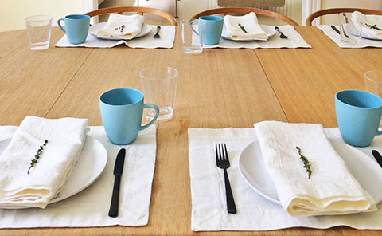

{kind=link}
{kind=link}

Tricia talks about tablecloths and napkins

{kind=link}
Orkney white placemats and napkins. Photo: Camila P.
This imaginative photo is from contributor Kim Krans who has her own on-line business - The Wild Unknown.
Napkins come in Orkney natural, and white, black and charcoal, plus Smooth natural and white. Made with deep hems and perfect mitered corners, 20” or 24”. I love the large Orkney squares, such traction!
On Smooth natural and white napkins the edge can either be hemmed, or raw with a pintuck, like the cocktail napkins.
Smooth white complements Orkney natural, so you can mix or use separately. Put Smooth napkin on your lap to cover your clothes, and use the Orkney to wipe sauce from your chin.
"I now have 12 of these wonderful napkins to match my Orkney tablecloth. They are very functional (easy to clean) and make a beautiful table setting." – Susan from Fayetteville, Arkansas
Orkney natural napkin with an inner Smooth white. Looks so elegant...
"I just want to say that I have several Rough Linen items which I use every day (and I am awaiting my next shipment which should be here Monday or Tuesday), and I love all of them. What I especially like is that avocado, tomato sauce, oil, and mustard have not ruined my Orkney napkins as those foods have ruined all of my other napkins. My pinafore has withstood many doses of olive oil and various sauces, too." – Patricia
Tricia talks about tablecloths and napkins
Orkney white placemats and napkins. Photo: Camila P.